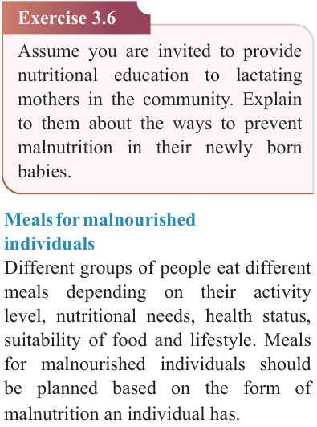

78


Food and Human Nutrition

Form Two

Exercise 3.6
Assume you are invited to provide nutritional education to lactating mothers in the community. Explain to them about the ways to prevent malnutrition in their newly born babies.
Meals for malnourished individuals
Different groups of people eat different meals depending on their activity level, nutritional needs, health status, suitability of food and lifestyle. Meals for malnourished individuals should be planned based on the form of malnutrition an individual has.
Meals for a child with acute malnutrition with oedema
This child requires more protein-rich foods such as meat, fish, milk and other dairy products, eggs, beans, soybeans, cowpeas and pigeon peas.
During
management,
one
should
gradually increase energy-dense foods from carbohydrates, sugars and fats
in their meal, at first, and then protein foods. More minerals and vitamins should be included in the diet. The food provided should be easy to chew. Liquid nutrient-dense foods and soft foods are preferred to replace the water lost through diarrhoea. Depending on the severity of the condition, management of children with acute malnutrition with oedema may begin at a health facility.
Once the child shows signs of recovery, management can continue at home.
An example of a meal for a child with acute malnutrition with oedema
Breakfast:
Wholemeal
porridge
with milk and groundnuts, fruits and vegetables
Mid morning: Fruit
Lunch: Boiled rice with fish stew, spinach soup and fruits
Mid afternoon: Banana milkshake
Supper: Mashed potato with beans and milk and fruit salad
Mashed potato with beans
Ingredients (serve 2 people)
5 medium-size Irish or sweet potatoes
90 g beans
1 onion
15 g butter
1g salt
water
125 ml milk
17/09/2025 16:30